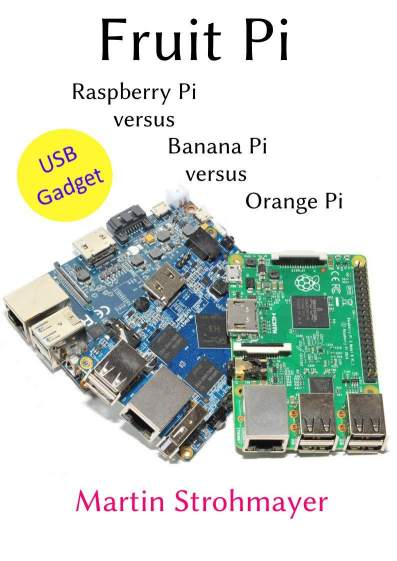

Hier bekommt man die gratis CC-Version meines Buches “Fruit Pi - Raspberry Pi versus Banana Pi versus Orange Pi”.
Gratis E-Book
Fruit Pi - Raspberry Pi versus Banana Pi versus Orange Pi 
Inhaltsangabe
In letzter Zeit erlebt der Markt für Einplatinencomputer einen regelrechten Boom. Es gibt unzählige Konkurrenzprodukte zum etablierten Raspberry Pi der Raspberry Pi Foundation. Die Firma LeMaker mit dem Banana Pi ist einer der Konkurrenten, der bereits früh versucht hat mit eigenen Produkten zu punkten. Neuer am Markt ist der Orange Pi von Shenzhen Xunlong. Es gibt ihn in den unterschiedlichsten Ausstattungen und Preisen.
Die drei Produkte Raspberry Pi, Banana Pi und Orange Pi werden im Buch intensiv beleuchtet und verglichen. Die Eckdaten, Bezugsquellen, Installation, GPIO‘s und die Performance stehen dabei im Mittelpunkt. Bei der Performance wird nicht nur Wert auf die CPU- bzw. Core-Leistung gelegt, sondern auch auf die Transfergeschwindigkeiten der Schnittstellen und die GPIO-Geschwindigkeiten mit der WiringPi C-Bibliothek.
Mittlerweile ist das Buch schon etwas veraltet, da es sich noch auf Debian 8 Jessie bezieht und damals für die Orange Pi keine stabiler Mainline Kernel zur Verfügung stand. Inzwischen gibt es für den Banana Pi und Orange Pi Armbian Linux Versionen mit Debian Stretch und aktuellen Mainline Kernel 4.
Lizenz
Dieses Werk steht unter der Lizenz Creative Commons BY-NC-ND 3.0. Sie erlaubt ausdrücklich, das Werk zu vervielfältigen, zu verbreiten und öffentlich zugänglich machen. Es muss der Urheber genannt werden, die Weitergabe darf nicht kommerziell erfolgen.
Es ist nicht erlaubt diese Werk zu verändern und darauf aufbauen zu erweitern.
Dieses Werk ist eine reduzierte kostenfreie Version des kommerziell erhältlichen E-Books. Es kann über
Amazon und Google bezogen werden.
Wenn Sie die Arbeit des Autors unterstützen wollen, oder die originale Version (qualitative bessere
Bilder, in Farbe und Diagramme) besitzen wollen, so erwerben Sie das E-Book, Danke!